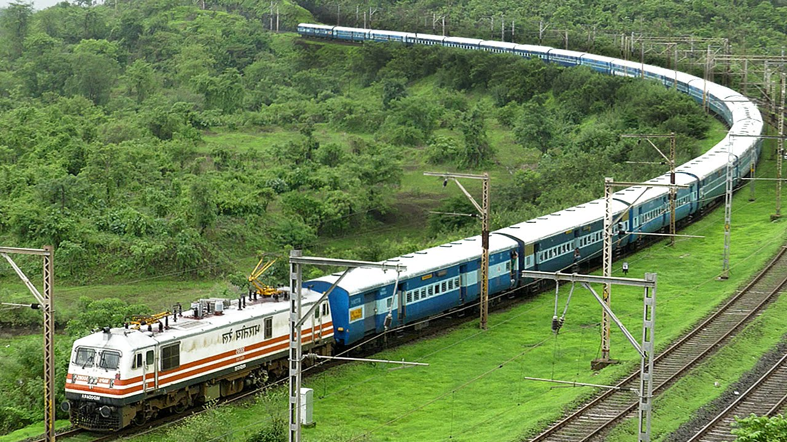
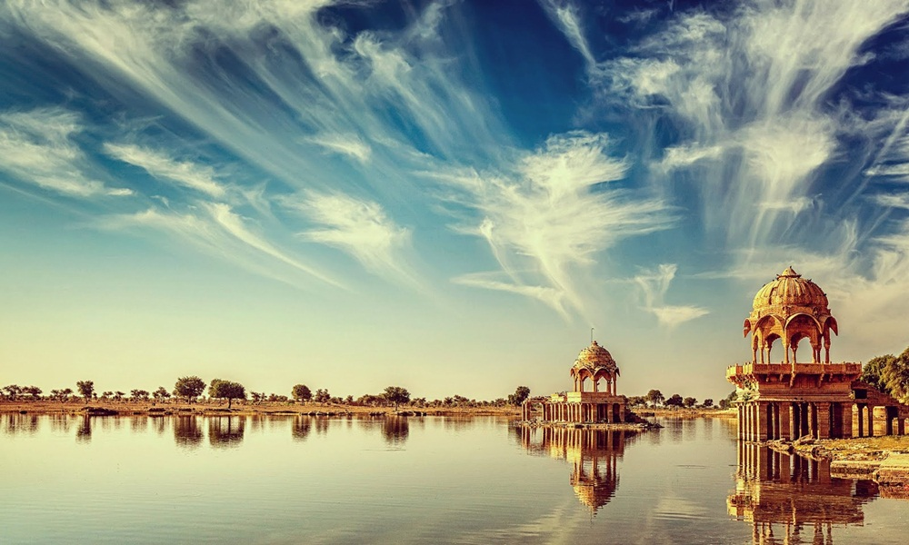
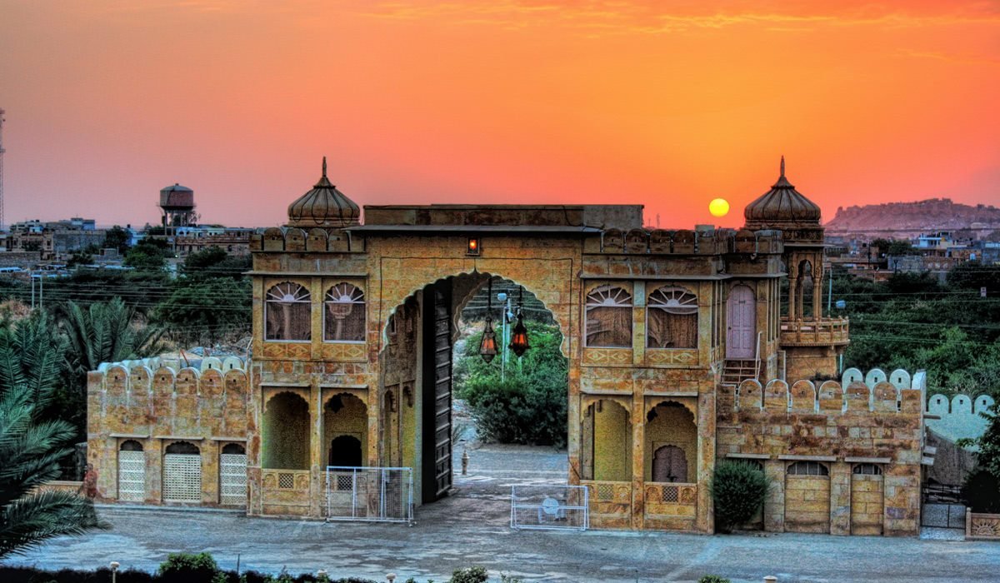
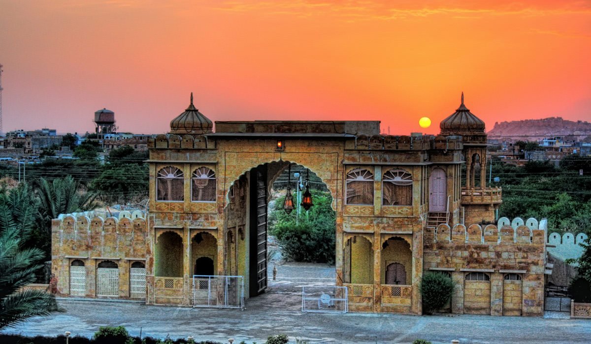
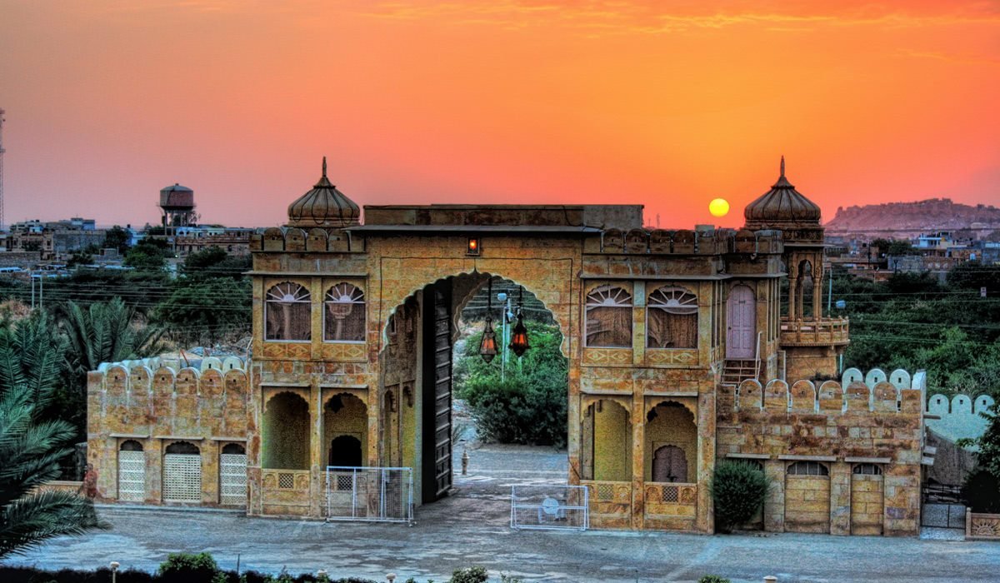

FANTASTIC RAJASTHAN BLOG

Are you visiting Udaipur in Rajasthan? Plan a one day trip to Chittorgarh Fort, when deciding on an itinerary. The Chittorgarh Fort is the biggest fort in India, with magnificent architecture and vibrant and exciting history, of valiant kings, battles and sieges, and tales of romance and Jauhar. I was in Udaipur, for a friend's son's wedding, where I met up with a bunch of old friends. We extended our stay by a few days, and spent the time, exploring places of interest around this beautiful city. It was the time when the movie Padmavat was in the news, hogging primetime debates on national television, and eliciting quite a controversy. Curiosity got the better of us, and we couldn't resist the urge to visit Chittorgarh, the famed site where history was created. We set off early, seated comfortably in a Tempo Traveller, booked the previous evening. Chittorgarh is roughly 115 km from Udaipur, and it takes just over 2 ½ hours to reach. It's a comfortable stretch on well-laid National Highways. I mention this, because it's good enough for a road trip, on a bike or car. Public transport, between the two cities, is good too. The driver's assistant (Kuldip) acted as our unofficial tour guide. Kuldip qualified for the part, born and brought up, as he was, in those parts. He had many a tale of romance and bravery to share. Of course, none could be authenticated, but his constant jabber kept us engaged and piqued our interest.
TRAVEL JOURNEY BLOG

I tend to subscribe to the belief that you haven’t been to India (let alone experienced India), until you’ve taken a long ride on Indian Railways. The view of this beautiful country is best from a bunk in an overnight train sleeper coach, watching the landscapes roll by and chatting to new-found friends. There are few better feelings on a journey around India than sitting at a window seat, masala chai in hand, simply watching the varied landscapes of India change, merge and blend before your eyes, or standing near a train doorway early in the morning after an overnight journey feeling the cool fresh breeze on your face. Travelling by train in India is safe, efficient, comfortable (depending on which class you pick – read below!) and our number one way to get around India. Head over here for some of our must-not-miss favourite train journeys in India! The third largest employer in the world, mover of 25 million passengers ever day, and owner of the longest railway platform in the word (amongst other trivia), travelling by Indian Railways is an experience not to be missed during your trip to India. Train travel in India is many things: But being ‘turn-up-and-go’ is definitely not one of them, and especially not for foreigners travelling in India (although fortunately this is changing – more below). Good things come to those who persevere, however and I truly believe that you won’t regret the time and effort put into planning your Indian train journeys. Many Indians depend on train travel to get around the country and the railways are still referred to as India’s lifeline. Given that a population of 1.2 billion people depend on them to get around, you can begin understand why the ticketing system is a little complex. Over my trips to India and living here over the last seven years I’ve learnt a lot about how to travel by Indian railways – by trial as much as by error – so much so that locals seem to come up to me on station platforms and ask me for directions!
Glimpses of Mharo Des


 


Upcomming Blogs
Himachal